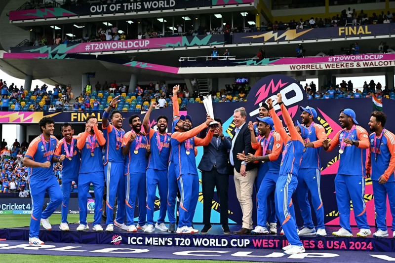
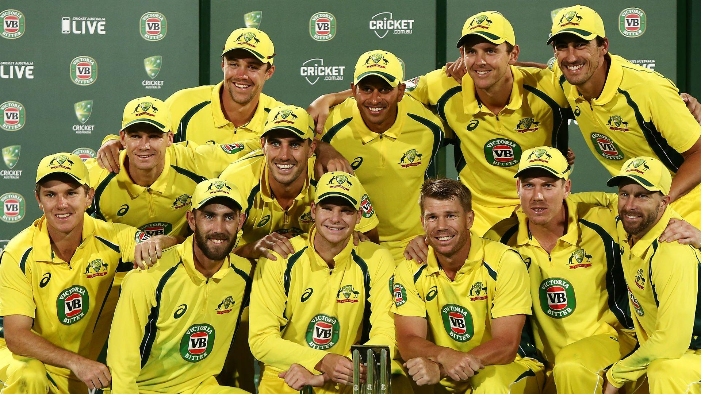

India Cricket Team
The Indian cricket team, also known as the "Men in Blue," represents India in international cricket. Known for its passionate fan base and cricketing heritage, India has produced some of the world's greatest cricketers, including Sachin Tendulkar, Virat Kohli, and MS Dhoni. They won the ICC Cricket World Cup in 1983 and 2011, and the ICC T20 World Cup in 2007.
Australia Cricket Team
The Australian cricket team is one of the most successful teams in cricket history, with multiple World Cup victories. Known for its aggressive and competitive style, Australia has produced legends like Sir Don Bradman, Shane Warne, and Ricky Ponting. They have won the ICC Cricket World Cup five times, with their last victory in 2015.
England Cricket Team

The England cricket team, the originator of the game, has a long history in international cricket. Known for their strategic approach and competitive spirit, England has won the ICC Cricket World Cup in 2019. Legendary players like Ian Botham, Alastair Cook, and Ben Stokes have represented England, contributing to its rich cricketing legacy.
South Africa Cricket Team

The South African cricket team, also known as the "Proteas," is renowned for its athleticism and resilience on the field. Despite facing challenges due to their historical ban from international cricket, South Africa has produced remarkable players like AB de Villiers, Jacques Kallis, and Dale Steyn. Known for their strong bowling and fielding, they are a competitive force in international cricket.